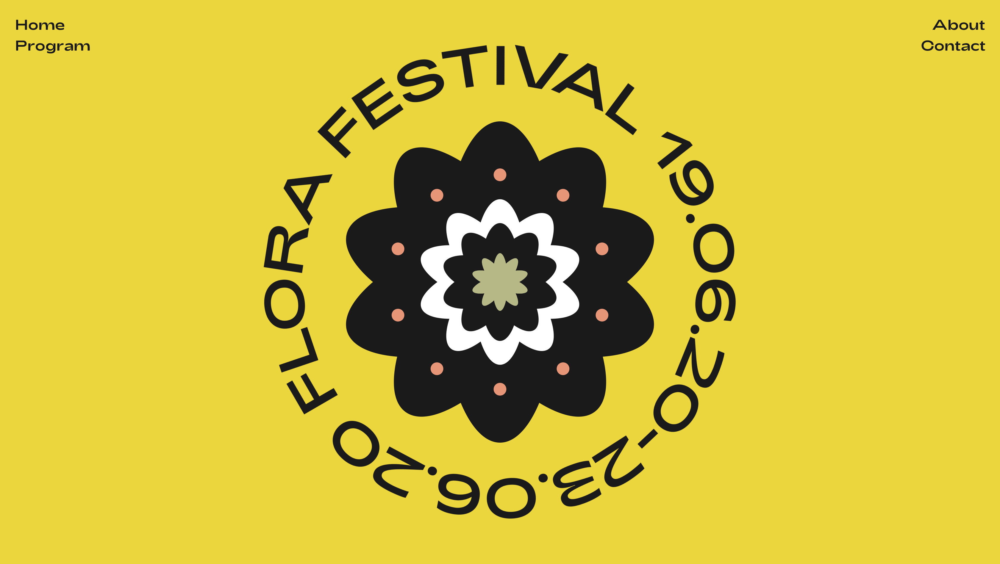
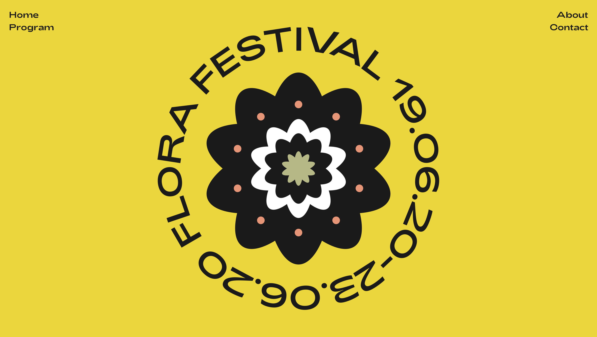
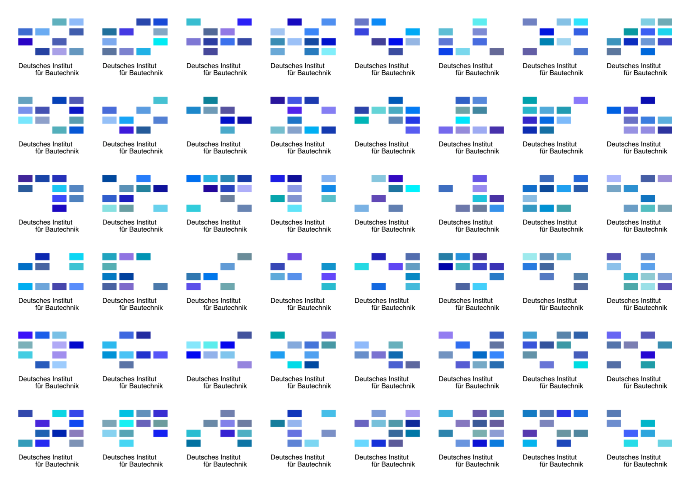

KADK Workshop November 2019
Selected projects from students at KADK getting introduced to code over a single week in November 2019. Some images are linked directly to the code.
Elena Cornelia Bauer
Music poster that reacts to microphone input.
Hugo Sá
Poster that uses a physics engine to construct and deconstruct letters.
Ida Lissner
Generative identity for a flower festival that changes every time the code runs.
 

Jeeyeong Kim
Generative identity pattern for Marimekko.

Shu-Yi Huang
Code-based pattern maker.
Zi-Rong Huang
Generative identity for a chinese liquor brand inspired by patterns in chinese woodworking.

Lunia Anais D'Ambrosio
Generative identity for the german institute of construction science.
Freja Hyldgaard
Generative identity for IKEA.